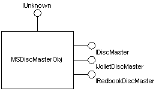

title: About the Image Mastering API description: This documentation focuses on a description of the Adaptec implementation of IMAPI for Microsoft (IMAPIv1). ms.assetid: 596ec3ea-17d1-4e60-8789-528ff00ae421 keywords:
This documentation focuses on a description of the Adaptec implementation of IMAPI for Microsoft (IMAPIv1). As such, descriptions of the four main COM objects and their interfaces are included in this document. The four main objects are as follows: MSDiscMasterObj, MSDiscRecorderObj, MSDiscStashObj, and MSBurnEngineObj.
There can be multiple MSDiscMasterObj objects instantiated on a system, but only one application can access a recorder at a time. The MSDiscMasterObj implements multiple interfaces, as shown in the following object diagram.

Applications use the IDiscMaster interface to perform the following tasks:
The IJolietDiscMaster and IRedbookDiscMaster interfaces are returned to an application through the IDiscMaster interface when a format is selected. These interfaces control the content of a data or audio disc, respectively. It is not expected that every application understand the specific format interfaces. Applications can access generic properties of the IJolietDiscMaster interface, such as volume name or legacy file name.
MSDiscRecorderObj objects are accessed through the IDiscRecorder interface. Every CD-R or CD-RW device that is compatible with IMAPI has a corresponding MSDiscRecorderObj object. An application uses pointers to the IDiscRecorder interface on those objects to select which device will be used by IMAPI to record a CD. In addition, applications can access generic properties of a recorder through IDiscRecorder. This includes such properties as writer speed or other burn parameters.
The remaining objects, MSDiscStashObj and MSBurnEngineObj, are internal objects accessed by IMAPI. They are mentioned here only to clarify the IMAPI architecture. The MSDiscStashObj represents (through the IDiscStash interface) a raw file up to 800 MB in size that is used by MSDiscMasterObj to create audio images or data discs to be burned. The stash is passed to the MSBurnEngineObj (through the IMSBurnEngine interface) when a burn is requested from the lower-level engine. The MSBurnEngineObj object expects the contents of the stash to be in a known format. In this respect, MSDiscMasterObj and MSBurnEngineObj have a contract regarding the contents of the stash.
Â
Â